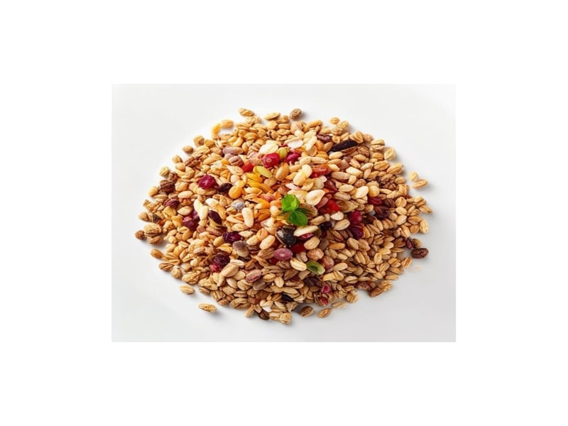

Zboża i kasze
Otręby pszenne
Otręby pszenne: 16 g białka, 216 kcal, 64 g węglowodanów i 4.6 g tłuszczu na 100 g. Kategoria: Zboża i kasze.
Kalorie216 kcalna 100 g
Białko / proteiny16 g
Węglowodany64 g
Tłuszcz4.6 g
Cena (szac.)~1,93 złza 100 g
Ceny zaktualizowano: maj 2026 (szacunek — ceny w popularnych supermarketach)
Porcja: łyżka (15g)
| Kalorie | 32 kcal |
|---|---|
| Białko | 2.4 g |
| Węglowodany | 9.6 g |
| Tłuszcz | 0.7 g |
| Cena (szac.) | ~0,29 zł |
Szczegółowe składniki odżywcze na 100 g
| Wartość energetyczna (kalorie) | 216 kcal |
|---|---|
| Białko (proteiny) | 16 g |
| Węglowodany | 64 g |
| Tłuszcz | 4.6 g |
| Tłuszcze nasycone | 0.8 g |
| Tłuszcze nienasycone | 3.8 g |
| Witaminy i minerały | Magnez, Tiamina (B1), Żelazo |
| Współczynnik kcal / 1 g białka | 13.5 |
| Cena produktu (szac. za 100 g) | ~1,93 zł |
| Cena za 100 g białka (szac.) | ~12,08 zł |